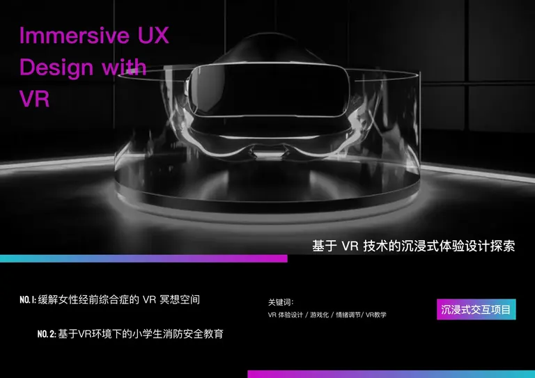

VR / 冥想空间与儿童情境教育
让沉浸式体验，回应人的感受与理解方式
同样是 VR，平静的冥想空间和儿童学习情境，需要不同的节奏与反馈。这两个项目探索声音、空间、动作和视觉提示如何共同影响体验。

需要解决什么问题
冥想场景需要降低主动投入的负担；儿童学习场景则需要让复杂指令变得直观。沉浸感之外，认知负担、视点和反馈强度同样需要设计。
项目参与
在冥想项目中参与轻量互动设计，以投掷、光点、呼吸和摇动树枝等动作构建环境回应；消防项目原稿呈现了场景、旅程、指令、声音和表情反馈的设计探索。
关键决策与取舍
- 01
用低负担互动进入冥想
通过渐进引导和象征性动作，让行为获得柔和的环境回应，避免把冥想变成一连串高强度任务。
- 02
把情境学习拆成连续选择
将故事、场景判断、即时反馈与复盘串联，以图形、简短提示和语音减少对长文本的依赖。
- 03
把身体与认知约束纳入设计
考虑儿童视点高度、声音强度和佩戴体验，探索真实感与紧张程度之间的平衡。
产出与验证到哪里
形成用户流程、概念草图、故事版、旅程图、VR 场景和交互细节展示。两组原稿均保留在下方。
展示为历史设计方案与原型。原稿中的情绪及学习效果表述，不作为已验证的疗效或教育成果。
把作品展开来看
带到下一个项目的思考
空间体验的品质不只取决于画面。如何进入、何时回应、反馈有多强，都会改变用户的感受和理解。
继续看看